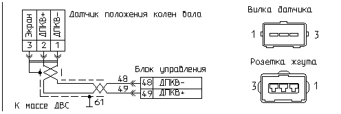

главная → коды ГАЗ
Код 053—неисправность датчика положения коленчатого вала (ДПКВ)
- Причина 1: датчик не подключен к жгуту проводов.
- Причина 2: наличие воды в соединителе датчика.
- Причина 3: замыкание на массу сигнальных проводов датчика.
- Причина 4: обрыв сигнальных проводов датчика.
- Причина 5: замыкание на бортсеть сигнальных проводов датчика.
- Причина 6: обрыв экранирующей оболочки проводов датчика или жгута.
- Причина 7: короткое замыкание проводов датчика.
- Причина 8: перепутана полярность сигнальных проводов датчика.
- Причина 9: неисправность датчика положения коленвала.
- Причина 10: неисправность высоковольтных цепей зажигания.
- Причина 11: неисправность блока управления двигателем.
- Причина 12: повышенный монтажный зазор датчика и синхродиска.
- Причина 13: пониженный монтажный зазор датчика и диска синхронизации.
- Причина 14: повышенное радиальное биение диска синхронизации.
- Причина 15: повреждение зубьев диска синхронизации.
- Причина 16: неправильная установка диска синхронизации.
- Способы проверки исправности цепи датчика.
Датчик не подключен к жгуту проводов

- Проверьте подключение датчика к жгуту проводов.
- Если вилка кабеля датчика подключена к розетке жгута проводов, то проверьте правильность ее подключения в соответствии с монтажной схемой жгута.
Если датчик подключен неверно, то, как правило, наряду с кодом неисправности «053» могут фиксироваться, например, коды неисправностей «054», «023», «024».
- После устранения неисправности включите зажигание, запустите двигатель и проконтролируйте отсутствие кода неисправности «053».
Наличие воды в соединителе датчика
- Если подключение датчика к розетке жгута проводов нормальное, то отсоедините от датчика розетку жгута проводов и проверьте наличие воды в его соединителе. При необходимости вытряхните воду из вилки и розетки соединителя датчика, очистите контакты от грязи.
- После устранения неисправности включите зажигание, запустите двигатель и проконтролируйте отсутствие кода неисправности «053».
Замыкание на массу сигнальных проводов датчика
- Внимательно осмотрите целостность кабеля датчика и его оболочки. Возможно повреждение кабеля вентилятором охлаждения или горячими приемными трубами двигателя.
- Для проверки исправности цепей отсоедините датчик и блок от жгута проводов. При отключенном зажигании проверьте омметром соединение цепей «49» и «48» жгута с массой двигателя: от контактов «2» и «1» розетки датчика до металлических деталей двигателя.
- При необходимости устраните неисправность указанных цепей.
- После устранения неисправности включите зажигание, запустите двигатель и проконтролируйте отсутствие кода неисправности «053».
Обрыв сигнальных проводов датчика
- Внимательно осмотрите целостность кабеля датчика и его оболочки. Возможно повреждение кабеля вентилятором охлаждения или горячими приемными трубами двигателя.
- Для проверки исправности цепи жгута отсоедините датчик и блок от жгута проводов.
- При отключенном зажигании проверьте омметром соединение цепей:
- «49»: от контакта «2» («ДПКВ+») розетки датчика до контакта «49» розетки блока;
- «48»: от контакта «1» («ДПКВ-») розетки датчика до контакта «48» розетки блока.
- После устранения неисправности включите зажигание, запустите двигатель и проконтролируйте отсутствие кода неисправности «053».
Замыкание на бортсеть сигнальных проводов датчика
- Отсоедините защитный чехол розетки датчика.
- Включите зажигание и проверьте вольтметром напряжение между контактами розетки датчика:
- «2» («ДПКВ+») и «3» («ДПКВ-экран»);
- «1» («ДПКВ-») и «3» («ДПКВ-экран»).
- Если напряжение около «12 В», то отсоедините датчик и блок управления от жгута проводов. Отключите аккумулятор от бортсети и проверьте омметром связь контактов «1» и «2» розетки датчика и контактов «18», «27» и «37» розетки блока.
- После устранения неисправности включите зажигание, запустите двигатель и проконтролируйте отсутствие кода неисправности «053».
Обрыв экранирующей оболочки проводов датчика или жгута
- Для проверки вероятной неисправности отсоедините датчик и блок от жгута проводов и при отключенном зажигании проверьте омметром целостность экранирующей оплетки «витой пары» кабеля: от контакта «3» розетки датчика до контакта «19» розетки блока. При необходимости дополнительно осмотрите качество опрессовки и соединения оболочек экранов проводов в теле жгута.
- После устранения неисправности включите зажигание, запустите двигатель и проконтролируйте отсутствие кода неисправности «053».
Короткое замыкание проводов датчика
- Отсоедините датчик положения коленвала от жгута проводов.
- Включите зажигание и проверьте омметром вероятность замыкания цепей «49» и «48» между контактами «2» и «1» розетки жгута.
- Если неисправность носит непостояннный характер, то при работающем двигателе пошевелите жгут проводов и оцените характер проявления текущей неисправности «053».
- После устранения неисправности включите зажигание, запустите двигатель и проконтролируйте отсутствие кода неисправности «053».
Перепутана полярность сигнальных проводов датчика
- Отсоедините датчик и блок управления от жгута проводов.
- Проверьте омметром ошибочную установку контактных гнезд в колодку розетки датчика при условии:
- если контакт «1» («ДПКВ-») розетки датчика соединен с контактом «49» розетки блока,
- а контакт «2» («ДПКВ+») розетки датчика соединен с контактом «48» розетки блока.
- При необходимости переустановите провода в колодке датчика в соответствии с электрической схемой.
- После устранения неисправности включите зажигание, запустите двигатель и проконтролируйте отсутствие кода неисправности «053».
Неисправность датчика положения коленвала
- Вероятны следующие неисправности датчика:
- потеря чувствительности датчика в процессе эксплуатации;
- неправильное соединение выводов на вилке датчика;
- перемагничивание датчика в процессе эксплуатации.
- Во всех случаях датчик неисправен и требует замены.
- Для проверки целостности обмотки датчика, отсоедините датчик от жгута проводов и проверьте омметром сопротивление между выводами вилки датчика «1» и «2» . Оно должно быть в пределах 300..500 Ом.
- Для проверки чувствительности датчика отсоедините его кабель от жгута проводов и в процессе прокрутки двигателя измерьте напряжение переменного тока между выводами «2» и «1»—оно должно быть не менее 1В при частоте вращения коленвала на менее 200 об/мин.
- Для проверки полярности датчика снимите его с двигателя, подключите вольтметр постоянного тока между выводами «2» («ДПКВ+»)» и «1» («ДПКВ-») кабеля датчика, резко приблизьте торец датчика к стальному предмету, если при этом показания вольтметра будут иметь положительное значение—полярность датчика правильная.
- После устранения неисправности включите зажигание, запустите двигатель и проконтролируйте отсутствие кода неисправности «053».
Неисправность высоковольтных цепей зажигания
- Проверьте, возможно на устойчивость работы канала синхронизации датчика положения коленвала оказывают влияние помехи бортсети, создаваемые неисправной высоковольтной частью системы зажигания.
- Отсоедините высоковольтные провода и проверьте омметром их активное сопротивление вместе с наконечниками—оно должно быть в пределах 6 кОм. При необходимости замените высоковольтные провода на исправные.
- Проверьте возможность замыкания высоковольтного разряда на массу двигателя. Поправьте трассу высоковольтных проводов, очистите оболочку проводов и наконечники от грязи.
- Проверьте сопротивление вторичных обмоток катушек зажигания—оно должно быть в пределах 13 кОм.
- После устранения неисправности включите зажигание, запустите двигатель и проконтролируйте отсутствие кода неисправности «053».
Неисправность блока управления двигателем

- Отсоедините блок управления от жгута проводов и внимательно осмотрите целостность контактов розетки жгута и вилки блока.
При необходимости отрихтуйте контакты соединителя или замените их. При обнаружении воды в соединителе блок необходимо снять, остатки
воды удалить, просушить блок при температуре не выше 85°C.
- Подключите к системе контрольный блок управления.
- После замены тестируемого блока на контрольный включите зажигание, запустите двигатель и проконтролируйте отсутствие кода неисправности «053».
- Если код «053» не регистрируется на контрольном блоке, то замените тестируемый блок на исправный.
Повышенный монтажный зазор датчика и синхродиска
- Пpоконтpолиpуйте с помощью наборного щупа монтажный зазоp между торцом датчика положения коленвала и торцом зуба синхродиска—зазоp должен быть в пpеделах 0,5..1,2 мм.
- Если монтажный зазоp выше ноpмы:
- снимите датчик и осмотрите его на предмет возможного повреждения корпуса, очистите датчик от грязи. Проверьте штангенциркулем размер от плоскости датчика до торца его чувствительного элемента—он должен быть в пределах 24 ± 0,1 мм. Датчик не удовлетворяющий данному требованию должен быть заменен;
- если датчик исправен,—замените кpышку шестерни распредвала на другую, котоpая обеспечивает ноpмальный монтажный зазоp пpи установке датчика.
- После устранения неисправности включите зажигание, запустите двигатель и проконтролируйте отсутствие кода неисправности «053».
Пониженный монтажный зазор датчика и диска синхронизации
- Пpоконтpолиpуйте с помощью наборного щупа монтажный зазоp между торцом датчика положения коленвала и торцом зуба синхродиска—зазоp должен быть в пpеделах 0,5..1,2 мм.
- Если монтажный зазоp ниже ноpмы:
- снимите датчик и осмотрите его на предмет возможного повреждения корпуса, очистите датчик от грязи. Проверьте штангенциркулем размер от плоскости датчика до торца его чувствительного элемента—он должен быть в пределах 24 ± 0,1 мм. Датчик не удовлетворяющий данному требованию должен быть заменен;
- если датчик исправен, то при его установке подложите под фланец датчика прокладку соответствующей толщины, котоpая обеспечивает ноpмальный монтажный зазоp пpи установке датчика.
- После устранения неисправности включите зажигание, запустите двигатель и проконтролируйте отсутствие кода неисправности «053».
Повышенное радиальное биение диска синхронизации
- Если неисправность проявляется на запуске двигателя и на режиме минимальных оборотов холостого хода, то вероятно имеет место повышенное радиальное биение диска синхронизации (синхродиска). Снимите синхродиск и осмотрите его. Если его части имеют повышенный износ, то синхродиск требует замены.
- После устранения неисправности включите зажигание, запустите двигатель и проконтролируйте отсутствие кода неисправности «053».
Повреждение зубьев диска синхронизации
- Вероятно имеет место повреждение зубьев диска синхронизации (синхродиска). Снимите синхродиск и осмотрите его. Если зубья диска имеют сколы или деформацию, раковины—замените его.
- После устранения неисправности включите зажигание, запустите двигатель и проконтролируйте отсутствие кода неисправности «053».
Неправильная установка диска синхронизации
- Вероятно имеет место неправильная установка диска синхронизации по отношению к фазе верхней мертвой точки первого или четвертого цилиндров.
- Снять датчик положения коленвала и выкрутить свечи зажигания.
- Провернуть коленвал двигателя до появления верхней мертвой точки первого или четвертого цилиндров.
- Проверить: начало 20-го зуба должно совпадать с верхней мертвой точкой первого или четвертого цилиндра, количество зубьев синхродиска «60–2».
- Если имеют место конструктивные несоответствия—устраните их.
- После устранения неисправности включите зажигание, запустите двигатель и проконтролируйте отсутствие кода неисправности «053».
Способы проверки исправности цепи датчика
- Включите зажигание. Запустите двигатель.
- Если двигатель не пускается, выполните продувку цилиндров воздухом (степень открытия дросселя >75%, стартер включен на 3—5 сек).
- Если параметры JTKT256=0 и FREQ=0, а код неисправности «053» не фиксируется, то имеет место полная неисправность канала датчика—см. причины: 1, 3, 4, 9, 11.
- Если фиксируется код неисправности «53», то канал датчика частично неисправен—см. причины: 2..16.
- После устранения неисправности включите зажигание, запустите двигатель и проконтролируйте отсутствие кода неисправности «053».
|